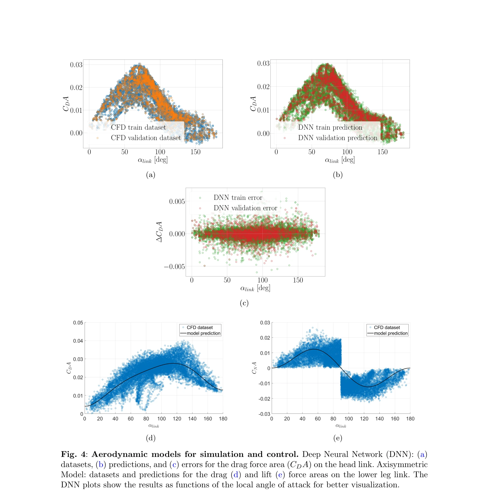
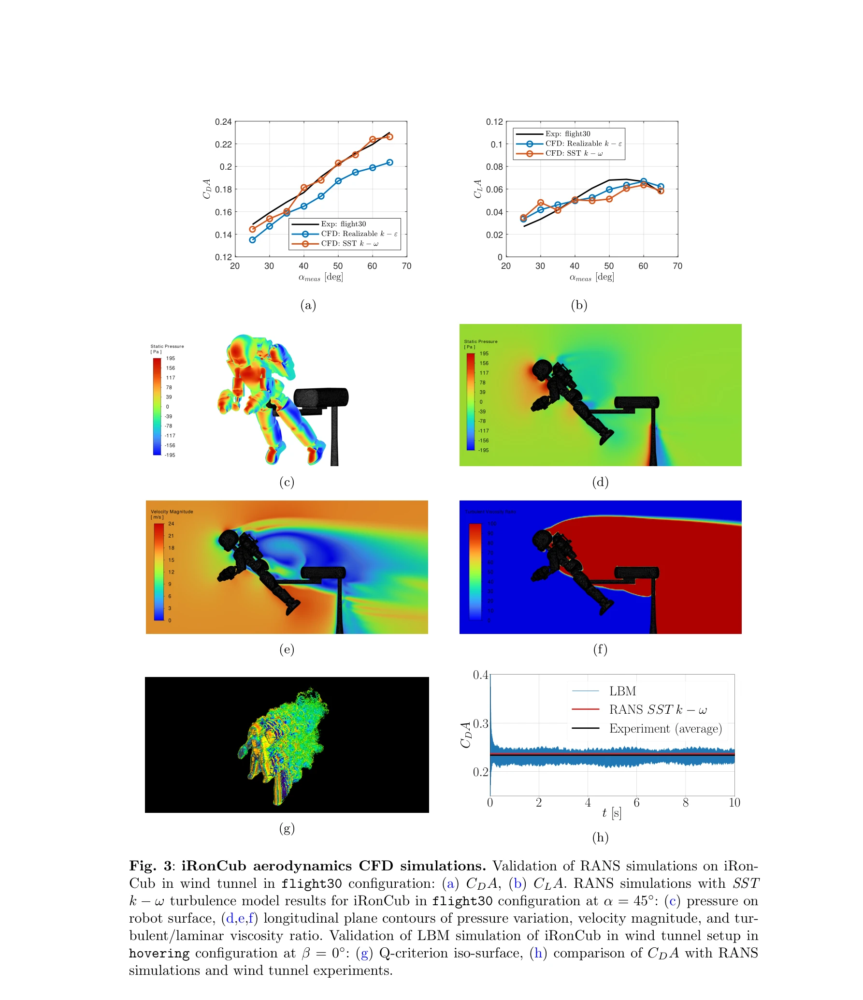

Essence

Fig. 1: Design of the iRonCub-Mk1 physical prototype. Front (a) and rear (b) pictures of the
비행 인간형 로봇의 공기역학 모델링을 위해 CFD 시뮬레이션, 풍동 실험, 딥러닝을 결합한 포괄적 접근 방식을 제시하고, 제트 엔진을 장착한 iRonCub-Mk1 로봇을 설계·제작하여 비행 제어를 구현한다.
저자: Antonello Paolino, Gabriele Nava, Fabio Di Natale, Fabio Bergonti, Punith Reddy Vanteddu, Donato Grassi, Luca Riccobene, Alex Zanotti, Renato Tognaccini, Gianluca Iaccarino, Daniele Pucci | 날짜: 2025-05-30 | URL: https://arxiv.org/abs/2506.00305
Fig. 1: Design of the iRonCub-Mk1 physical prototype. Front (a) and rear (b) pictures of the
비행 인간형 로봇의 공기역학 모델링을 위해 CFD 시뮬레이션, 풍동 실험, 딥러닝을 결합한 포괄적 접근 방식을 제시하고, 제트 엔진을 장착한 iRonCub-Mk1 로봇을 설계·제작하여 비행 제어를 구현한다.

Fig. 4: Aerodynamic models for simulation and control. Deep Neural Network (DNN): (a)

Fig. 3: iRonCub aerodynamics CFD simulations. Validation of RANS simulations on iRon-
총평: 인간형 로봇의 비행 능력 확보를 위해 공기역학 모델링과 제어를 종합적으로 다룬 기술적·과학적으로 의미 있는 연구이며, 다중 모드 로봇의 미래 설계에 중요한 기여를 제시한다. 다만 실제 비행 실험 검증과 학습 모델의 일반화 성능 평가가 후속 과제이다.